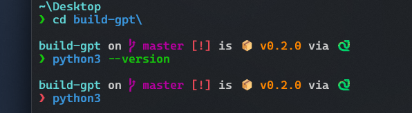
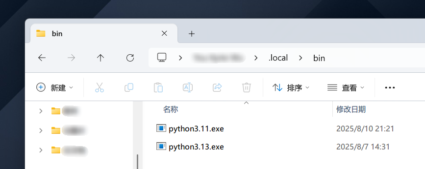
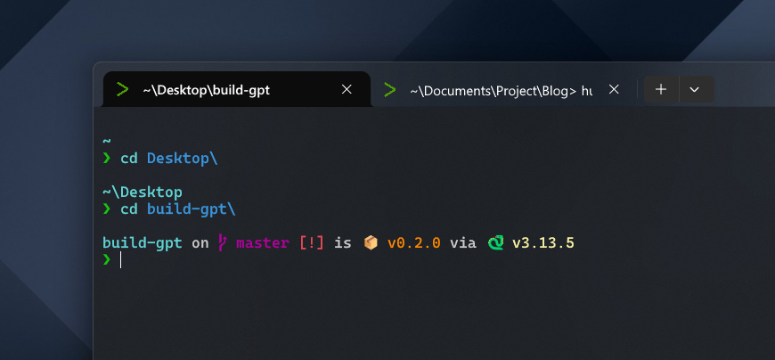

修复 uv 管理的 Python 在 Starship 中的显示问题
Starship 1.23.0 暂不支持 uv 包管理器
前言
- Starship 是一套高颜值 Shell 美化工具
- uv 是新一代 Python 包管理器，同时还支持安装 Python
目前遇到的问题是，在 Starship 当前版本中，Python 版本不能正常显示：

解决方案
首先，uv 在系统注册的环境变量是 ~/.local/bin 目录：

所以在终端中输入 python、python3 等等都是不管用的。
借鉴另一个包管理器， Pixi 的配置方案。在 starship.toml 中配置 Python 指向虚拟环境的位置，而不是企图在整个系统环境变量中找到 Python。
-
找到 Starship 的 toml 配置目录：
starship config -
添加以下内容：
[python] # customize python binary path for uv python_binary = [ "python", # fall back to uv's python if it's available ".venv/Scripts/python", ]
需要注意的是，.venv/Scripts/python 目录只适用于 Windows，如果是 Mac / Linux 应大概是 .venv/bin/python，需读者自己查证。
修复效果

上次修改於 2025-08-16